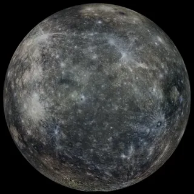
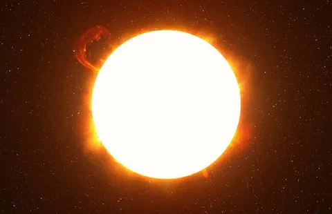
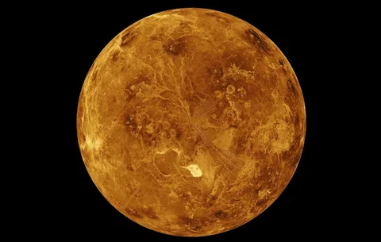
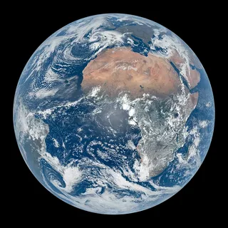
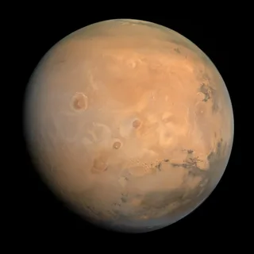
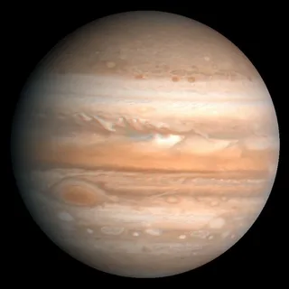
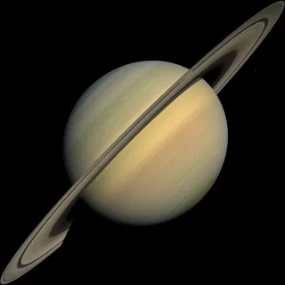
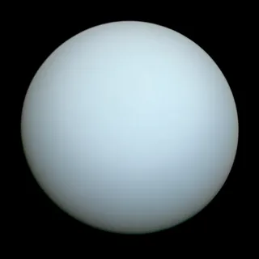
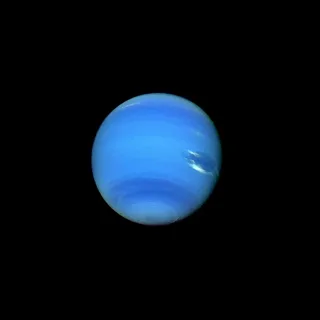

Меркурий
Возраст: ≈ 4,5 млрд лет
Состав: металлическое ядро (железо), силикатная мантия и кора
Спутники: 0 (NASA, 2024)
Возраст Солнечной системы — ≈ 4,6 млрд лет.

Возраст: ≈ 4,6 млрд лет
Состав: 73% водорода, 25% гелия, 2% других элементов (по массе)
Звезда класса G2V в центре Солнечной системы. Источник энергии — термоядерные реакции синтеза гелия из водорода.

Возраст: ≈ 4,5 млрд лет
Состав: металлическое ядро (железо), силикатная мантия и кора
Спутники: 0 (NASA, 2024)

Возраст: ≈ 4,5 млрд лет
Состав: железное ядро, силикатная мантия, плотная CO₂-атмосфера
Спутники: 0 (NASA, 2024)

Возраст: ≈ 4,54 млрд лет
Состав: железо-никелевое ядро, силикатная мантия, кора, гидросфера, N₂/O₂-атмосфера
Спутники: 1 (Луна) (NASA, 2024)

Возраст: ≈ 4,6 млрд лет
Состав: железо-сульфидное ядро, силикатная мантия, кора, тонкая CO₂-атмосфера
Спутники: 2 (Фобос, Деймос) (NASA, 2024)

Возраст: ≈ 4,6 млрд лет
Состав: водород (90%) и гелий (10%), возможное каменное ядро
Спутники: 95 (IAU, 2023)

Возраст: ≈ 4,5 млрд лет
Состав: водород и гелий, ледяное/каменное ядро, система колец из льда и пыли
Спутники: 146 (IAU, 2023)

Возраст: ≈ 4,5 млрд лет
Состав: «ледяной гигант» — вода, аммиак, метан; каменное ядро
Спутники: 28 (IAU, 2023)

Возраст: ≈ 4,5 млрд лет
Состав: «ледяной гигант» — вода, метан, аммиак; каменное ядро
Спутники: 16 (IAU, 2023)